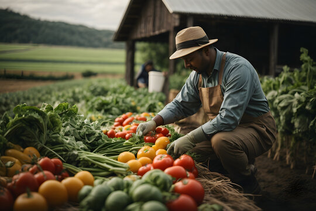

Local markets offer a wide variety of fresh, seasonal produce directly from local farmers.
Since the produce is often harvested locally and sold soon after, it is fresher and retains more nutrients compared to produce that has traveled long distances.
Shopping at local markets stimulates the local economy by keeping money within the community.
It supports small-scale producers, farmers, and artisans, contributing to the sustainability of local businesses.
By reducing the need for long-distance transportation and packaging, local markets promote sustainable practices and reduce carbon emissions associated with food transportation.
It also serves as hubs for community interaction and engagement. They provide a space for residents to come together, socialize, and connect with local vendors and artisans.
often offer flexible pricing compared to supermarkets, allowing for negotiation and personalized deals between vendors and customers.
Local markets can help reduce food waste by allowing vendors to sell imperfect or surplus produce that may not meet the strict aesthetic standards of supermarkets.
They also encourages healthier food choices by promoting whole, minimally processed foods and offering a wide variety of fruits, vegetables, and whole grains.
Supporting local markets helps preserve agricultural land by providing farmers with a viable market for their products, reducing the pressure for land conversion to non-agricultural uses.
It contribute to food security by ensuring access to fresh, nutritious food for residents, especially in underserved areas.